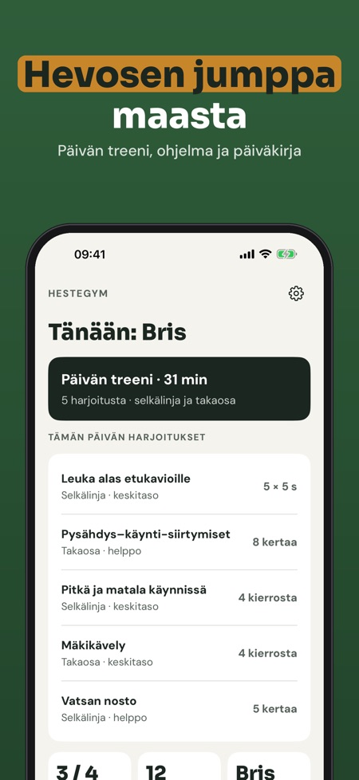
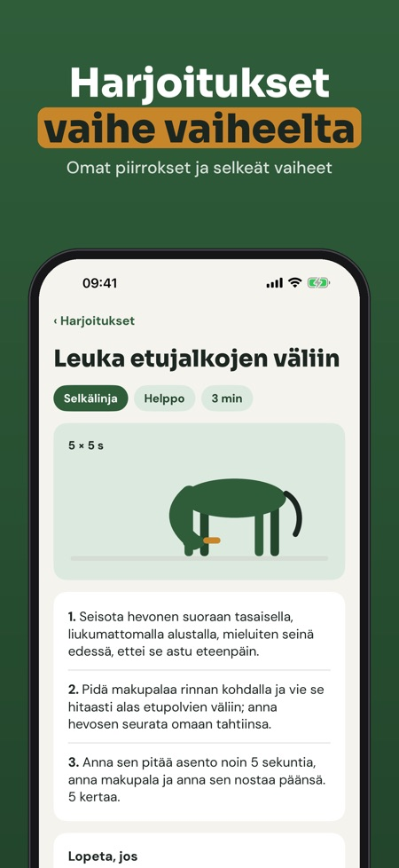
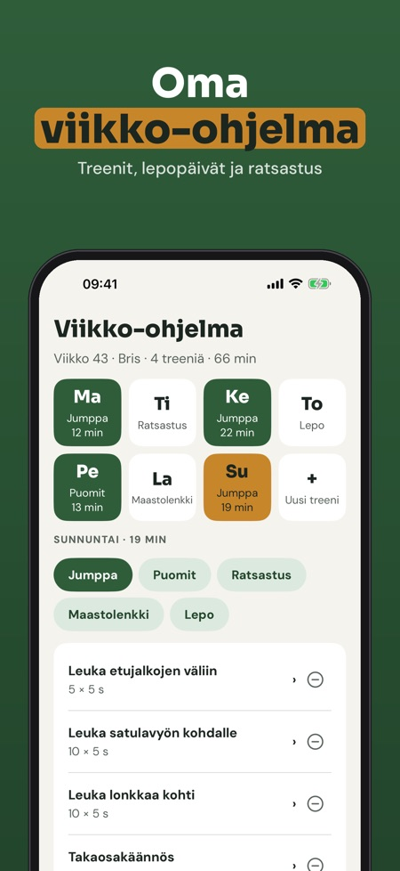

Venyttely, lihaskunto, ohjelma. Maasta tehtävät harjoitukset hevosellesi: venyttely, lihaskunto ja tasapaino lyhyinä treeneinä ajastimella, viikko-ohjelmalla ja päiväkirjalla.



Hestegym on harjoitusohjelma maasta tehtävään työskentelyyn: harjoituskirjasto, viikko-ohjelma, ajastin ja päiväkirja yhdessä paikassa.
Päivän treeniä ajastimella, 12 harjoitusta ja päiväkirjaa voi käyttää ilman ostoa. Täysi versio on kertaosto, joka avaa koko kirjaston, viikko-ohjelmat, muistutukset, edistymisen ja useamman hevosen. Ei tilausta.
Hestegym ei anna eläinlääkärin neuvoja eikä korvaa eläinlääkäriä tai fysioterapeuttia. Jos hevonen on loukkaantunut, ontuu tai on hoidossa, kysy eläinlääkäriltä ennen aloittamista.